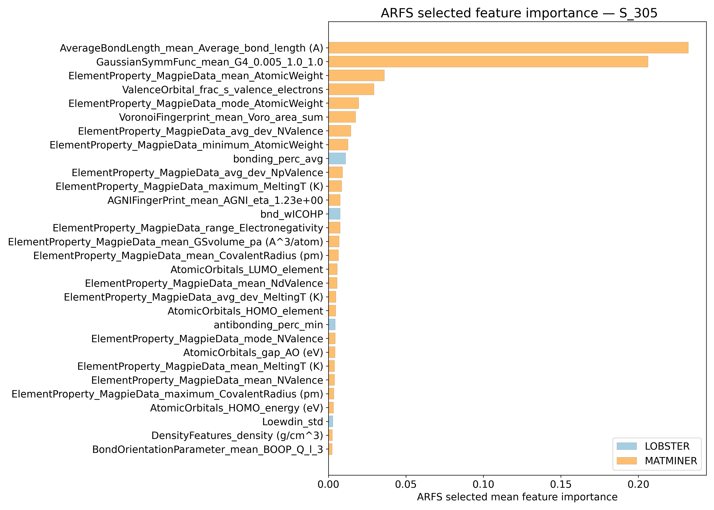
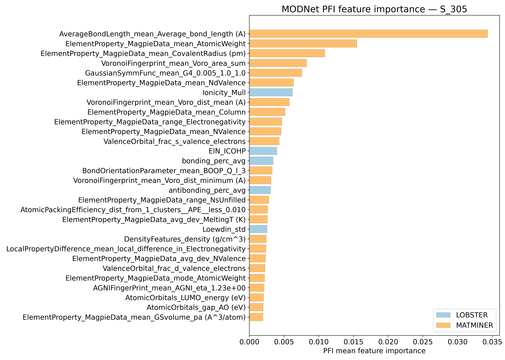
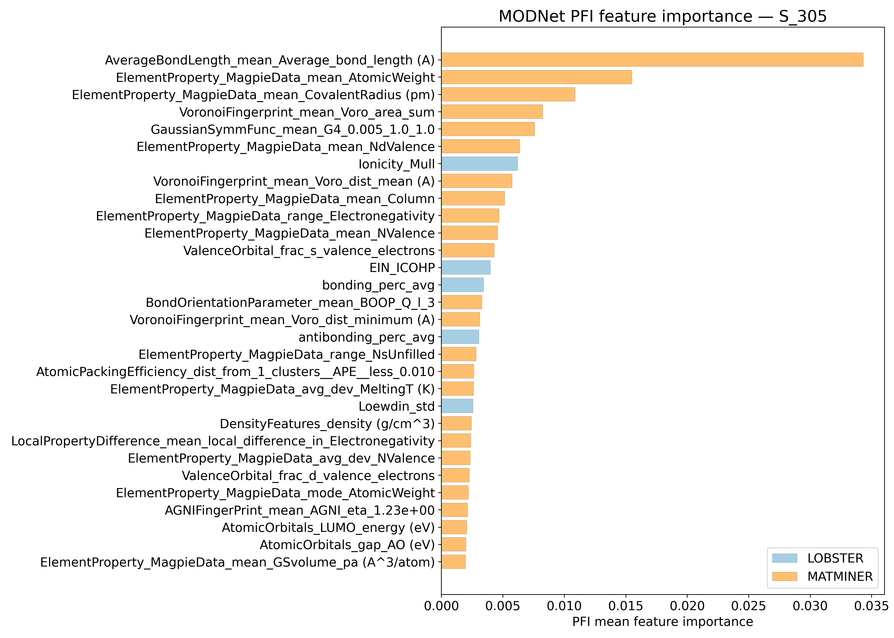

Vibrational entropy @ 305K - meV/atom - S_305#
ARFS Top features#
ARFS selected descriptors#

Correlation analysis#
Distance correlation#

Dependency graphs#

Feature learnability#

Model performance#
5-Fold CV Metrics overview#
RF - MATMINER
train_rmse |
test_rmse |
train_errors |
test_errors |
train_r2 |
test_r2 |
|
|---|---|---|---|---|---|---|
mean |
0.00828 |
0.0225 |
0.00618 |
0.01684 |
0.99536 |
0.96522 |
min |
0.0081 |
0.0197 |
0.006 |
0.015 |
0.9951 |
0.9574 |
max |
0.0084 |
0.0242 |
0.0063 |
0.0175 |
0.9955 |
0.9732 |
std |
9.79796e-05 |
0.00154532 |
9.79796e-05 |
0.000935094 |
0.000135647 |
0.00510075 |
RF - MATMINER+LOBSTER
train_rmse |
test_rmse |
train_errors |
test_errors |
train_r2 |
test_r2 |
|
|---|---|---|---|---|---|---|
mean |
0.0083 |
0.02272 |
0.00622 |
0.01696 |
0.99532 |
0.96462 |
min |
0.0082 |
0.0198 |
0.0061 |
0.015 |
0.9949 |
0.9595 |
max |
0.0085 |
0.024 |
0.0064 |
0.0178 |
0.9955 |
0.9728 |
std |
0.000109545 |
0.00149853 |
9.79796e-05 |
0.00107629 |
0.000213542 |
0.0045411 |
MODNet - MATMINER
train_rmse |
test_rmse |
train_errors |
test_errors |
train_r2 |
test_r2 |
|
|---|---|---|---|---|---|---|
mean |
0.00978 |
0.01452 |
0.0072 |
0.01068 |
0.99328 |
0.98558 |
min |
0.0073 |
0.0137 |
0.0054 |
0.0102 |
0.9901 |
0.9843 |
max |
0.0122 |
0.0149 |
0.0088 |
0.0111 |
0.9964 |
0.9867 |
std |
0.00186698 |
0.000430813 |
0.00131301 |
0.000305941 |
0.002449 |
0.000874986 |
MODNet - MATMINER+LOBSTER
train_rmse |
test_rmse |
train_errors |
test_errors |
train_r2 |
test_r2 |
|
|---|---|---|---|---|---|---|
mean |
0.00932 |
0.01374 |
0.00696 |
0.01022 |
0.99404 |
0.98704 |
min |
0.0085 |
0.0126 |
0.0063 |
0.0095 |
0.9926 |
0.9856 |
max |
0.0105 |
0.0144 |
0.0078 |
0.0107 |
0.9951 |
0.9889 |
std |
0.000770454 |
0.000611882 |
0.000560714 |
0.000435431 |
0.000987117 |
0.00137492 |
Corrected resampled t-test on 10-fold CV#
Summary
t_stat |
p_value |
significance_stars |
d_av |
rel_improvement |
percent_folds_improved |
|
|---|---|---|---|---|---|---|
RF |
-0.587611 |
0.71438 |
-0.077424 |
-0.621297 |
30 |
|
MODNet |
0.429496 |
0.33883 |
0.170506 |
1.78933 |
40 |


Model Explainer#
PFI#
 

SHAP#


Misc#
ARFS n-iter convergence checks#

MAE/ fold from 10-fold CV#
Alternative visual summary of input data for t-test